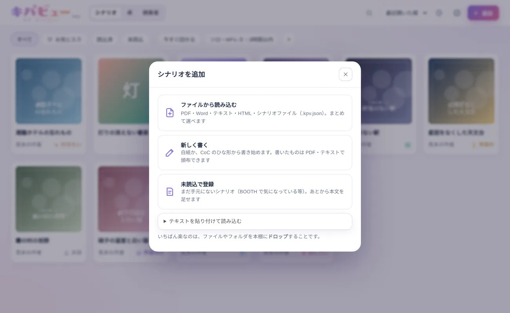
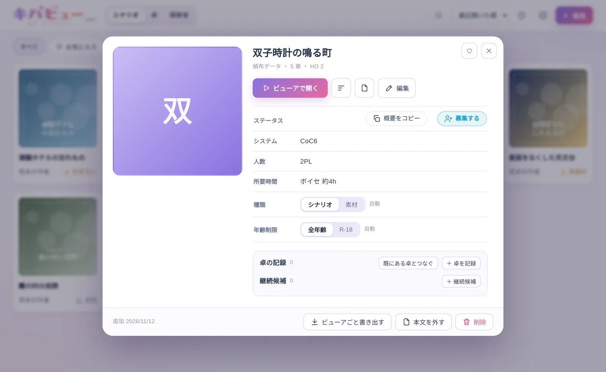
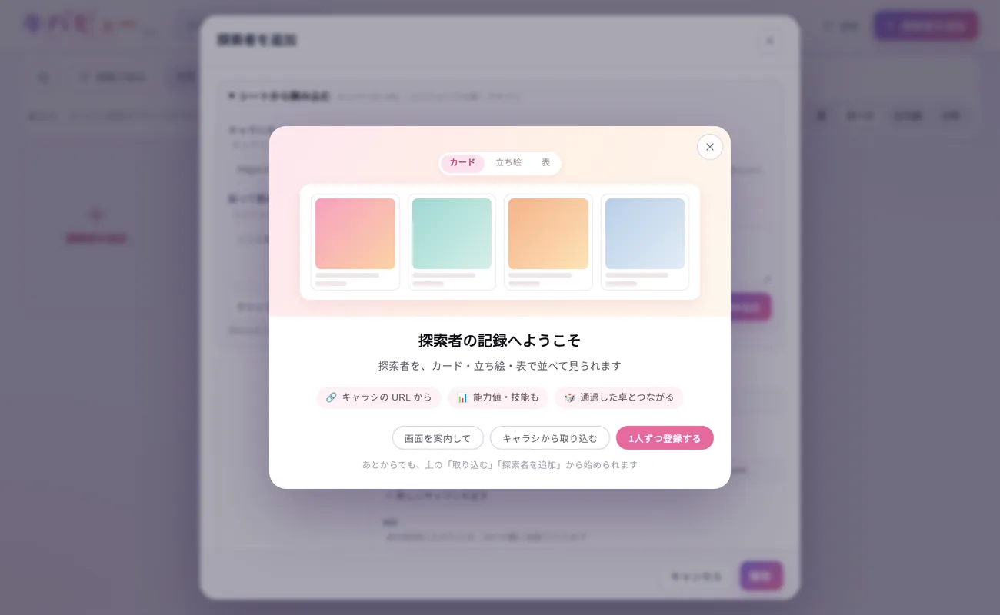
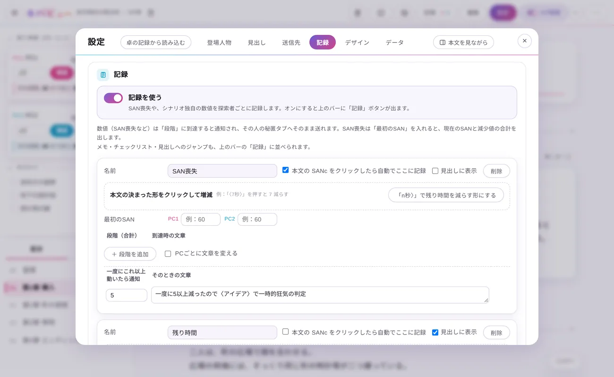

シナリオを取り込む
持っているシナリオを本棚に入れます。入れ方は 3 つあります。
BOOTH Library Manager からWindowsBLM のフォルダをつなぐと、買ったシナリオが表紙・BOOTH のリンクごと本棚に並びます。
拡張機能からChrome拡張機能「BLM・キパビュー連携」を入れると、BOOTH・TALTO・pixiv のページからキパビューに送れます。
ファイルからPDF・テキスト・Word・HTML を、＋ 追加 から選ぶか、画面にドラッグします。

本棚の ＋ 追加：ファイルから読み込むほか、「未読込で登録」で本文なしで本棚に入れておくこともできます 読み込むと「解析の設定」が開きます。見出しの記号ごとに章・見出しなどを選んで開きます（くわしく）。
募集する
本棚でシナリオの表紙を押し、詳しい画面から募集します。
- 概要をコピー：シナリオ名・システム・人数・概要を、Discord にそのまま貼れる形でコピーします。
- 募集する：日程調整ツール「ヒヨリ」の募集ページを、シナリオの中身を入れた状態で開きます。同時に卓の予定が作られ、ヒヨリで決まった候補日や参加の希望が、あとから卓に写ります。

シナリオの詳細：ステータスの右に 概要をコピー と 募集する メンバーを登録する
卓に KP・PL と、それぞれの探索者（PC）を登録します。
- 卓 の画面（またはホームの 新規登録する）で卓を開き、KP・PL の名前を入れます。はじめに、自分の名前を登録しておくと、自分が KP か PL かで絞り込めます。
- 探索者は、探索者 の画面で、いあきゃら・キャラクター保管所などのキャラシの URL や、ココフォリアの駒から取り込めます。
- 卓の「KP・PL と探索者」で、PL ごとに探索者を選びます。本文の「PC1」などを、探索者の名前に置き換えて送れるようになります。


卓の記録：KP・PL と探索者、日程、部屋の URL などを入れます 本文を整える
セッションで使いやすいように、シナリオの本文を整えます。元のファイルは書き換えません。
見出し設定 → 見出し で、記号ごとの役割（章・見出し・探索箇所・情報など）を決めます。1 行だけ変えるときは編集モードで。
変数設定 → 記録 で、SAN 喪失・残り時間・フラグ・ギミックの数値など、セッション中に数える値を決めます。
記録「記録を使う」をオンにすると、上のバーの 記録 から、探索者ごとに値やメモを残せます。

記録の設定：本文の決まった所を押すと、自動で数えるようにもできます 
編集モード：段落の種類・送り先のタブ・発言者を、段落ごとに決められます（くわしく） 卓報告を残す
卓が終わったら、卓の記録にエンド・スクショ・ログを入れて残します。
- 卓の記録に、エンドと、スクショを入れます。スクショから探索者の顔を切り抜いて、差分として残すこともできます。
- ココフォリアのログ（書き出した HTML・JSON・zip）を入れると、タブごとに目次の付いた読みやすい形で見られます。整えたログを 1 つの HTML に書き出すこともできます。
- 通過報告を作る で、卓の報告を作れます。
- takuhoko のバックアップ（JSON）を取り込んだり、卓の記録を受け渡したりもできます。

ホームの「記録」：卓ごとにスクショ・エンド・探索者・ログのボタンが並びます


これでひと通りです！
ほかの使い方は 使い方ガイド へ。わからないことは Discord サーバー でどうぞ。